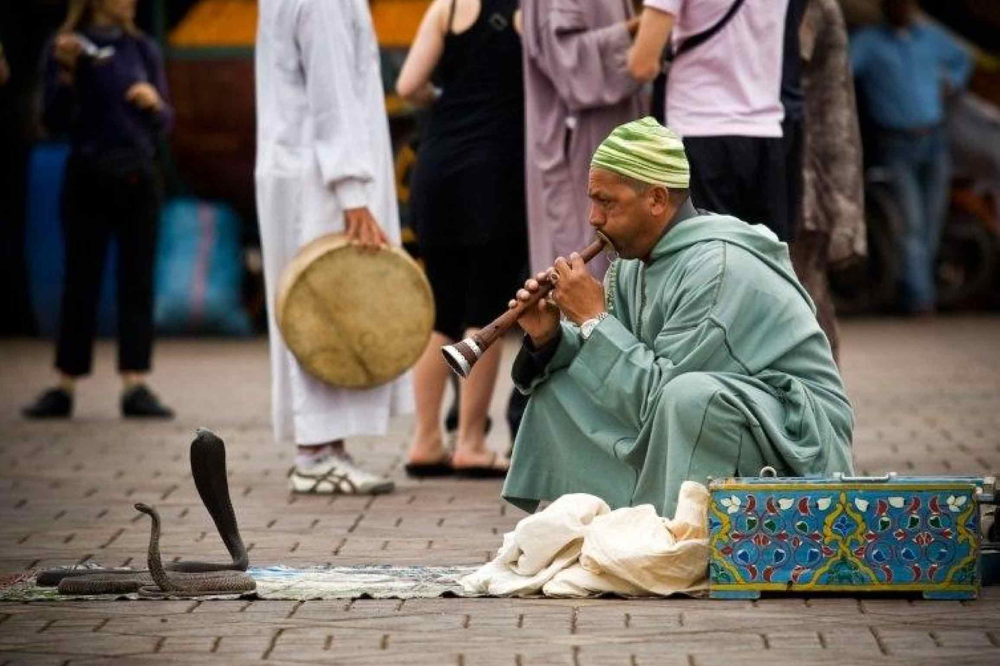
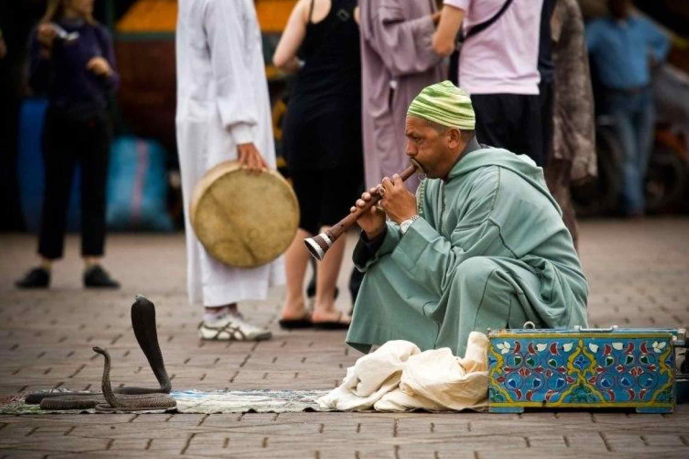

The Experience
Ancient Medina Meets Modern Comfort
Our journey begins in Morocco's most iconic city—a sensory explosion of souks, spices, snake charmers, and stunning riads hidden behind ancient walls.
We arrive Sunday evening (~8:45pm) and have all of Monday to explore before collecting our rental car Tuesday morning. Two nights to shake off travel, immerse in the medina's energy, and begin our Moroccan adventure from a beautiful traditional riad.
Quick Facts
📅 Dates: March 30-April 1, 2026
🏨 Nights: 2
💰 Cost: £275 (Riad Pachavana)
🌡️ Weather: Perfect 23°C/73°F days
✈️ Arrival: 8:45pm Sunday
🚗 Departure: Tuesday ~8:30am to Todra
Our Home Base
Riad Pachavana
A beautiful traditional riad in the heart of the medina—exactly the authentic Marrakech experience we want.
Why We Chose This Riad
✨ Perfect medina location — 2 minutes from Medersa Ben Youssef, 10-minute walk to Jemaa el-Fnaa square
🏊 Swimming pool — Classic riad courtyard pool for Monday relaxation
🌅 Rooftop terrace — Morning coffee with medina views
🍽️ On-site restaurant — Perfect for late Sunday arrival dinner
⭐ Excellent reviews — Guests rave about the architecture and hospitality

🍽️ Sunday Night Arrival Dinner
We land at 8:45pm, transfer to riad (~20min), and can have dinner served around 9:15-9:30pm. The riad's restaurant serves traditional Moroccan cuisine in the beautiful dining room or on the rooftop terrace.
Our first taste of Morocco: Traditional tagine — slow-cooked in clay pots with aromatic spices. Vegetable, chicken, or lamb options. This is the dish Morocco is famous for, and there's something magical about eating your first tagine in a candlelit riad courtyard after a day of travel.

Exploring Marrakech
Monday: Our Full Day in the Medina
Monday is our only full day to explore, so we'll focus on the medina's highlights—winding souks, historic sites, and the famous Jemaa el-Fnaa square.
🌅 Morning: Architecture & History
Medersa Ben Youssef — Just 2 minutes from our riad, this 14th-century Islamic college is one of Morocco's most beautiful buildings. Intricate tile work, carved cedar, stunning courtyard. Opens 9am.
Bahia Palace — 19th-century palace with gardens, painted ceilings, and elaborate architecture. 15-minute walk from riad.
Koutoubia Mosque — Marrakech's iconic 77m minaret. Non-Muslims cannot enter Moroccan mosques, but the exterior and gardens are stunning.
Le Jardin Secret — A beautifully restored historic garden in the heart of the medina with Islamic architecture, exotic plants, and a peaceful escape from the souks.


🛍️ Late Morning/Afternoon: The Souks
Get gloriously lost in the medina's labyrinth of souks (markets). Each section specializes:
🧶 Souk Semmarine — Main artery, textiles, carpets
🥄 Souk Haddadine — Metalwork, lanterns
🎨 Souk des Teinturiers — Dyers' souk, colorful yarn hanging
🌿 Souk el Attarine — Spices, perfumes, traditional cosmetics
Haggling is expected—offer 40-50% of asking price and negotiate up. It's a game, enjoy it!


🍽️ Lunch: Rooftop Medina Views
Many cafes and restaurants have rooftop terraces overlooking the medina chaos. Perfect for:
• Moroccan mint tea and pastries
• Traditional couscous or tagine
• Fresh-squeezed orange juice (Morocco is famous for it!)
• People-watching while you rest tired feet
Recommendation: Look for terraces near Jemaa el-Fnaa for the best views of the square and Koutoubia Mosque.


🌆 Evening: Jemaa el-Fnaa Square
As the sun sets, the main square transforms into Morocco's greatest street theater:
🎪 Snake charmers and acrobats
🎵 Musicians and storytellers
🍊 Fresh juice stalls (incredible orange juice for £1)
🍢 Food stalls serving everything from snails to kebabs
🔮 Fortune tellers and henna artists
The energy is electric. Smoke from grills, calls to prayer, drum circles, crowds—this is Morocco at its most vibrant.
 

🌙 Dinner Options
Option 1: Riad Pachavana — Return "home" for another traditional meal in peaceful surroundings
Option 2: Rooftop Restaurant — Book a table at one of Jemaa el-Fnaa's rooftop restaurants for sunset views over the square
Option 3: Food Stalls — Brave the busy food stalls in Jemaa el-Fnaa (adventurous but authentic!)
🎯 Marrakech Survival Tips
Getting Lost: You will get lost. Everyone does. It's part of the experience. Always remember "Jemaa el-Fnaa" and locals will point you back.
Photography: Always ask before photographing people—many will want a tip. Merchants may want payment for photos of their goods.
Guides: Politely decline unofficial "guides" who approach offering help. They expect payment.
💰 Money Matters
Cash: Bring Moroccan Dirhams (exchange at airport or ATM). Many small vendors don't take cards.
Haggling: Expected in souks, NOT in restaurants/cafes with posted prices.
Tipping: 10-15 Dirhams for small services, 10% at restaurants
Why Marrakech Is the Perfect Start
Marrakech gives us our "Morocco legs"—we get used to medinas, haggling, mint tea, the energy, the architecture. Everything we experience here will feel familiar when we reach Taroudant's quieter souks.
Plus, staying in a traditional riad immediately immerses us in Moroccan culture. No Western chain hotel—we're sleeping in a centuries-old building with traditional tile work and a courtyard fountain. This is the authentic Morocco experience.
And when we leave Tuesday morning for the mountains, we'll already feel like Morocco veterans!
Departure Day
Tuesday Morning: Beginning Our Road Trip
🚗 8:30am Car Pickup
Our rental car company (local, reputable) delivers our SUV with FREE Medina delivery. They'll meet us at the nearest parking area to the riad via WhatsApp coordination—no stressful airport pickup or navigating Marrakech traffic!
Quick paperwork, load up, and we're on the road to Todra Gorge by 9am. The real adventure begins...